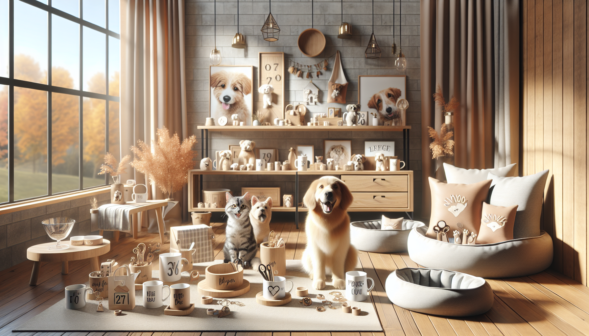

If you have ever gone to Etsy looking for one cute pet item and somehow ended up bookmarking ten more, you are definitely not alone. This year, Etsy continues to be one of the best places to discover creative, personalized, and genuinely heartwarming pet products that feel far more special than anything mass-produced. For pet owners, dog lovers, and thoughtful gift shoppers, the platform is packed with handmade finds that celebrate the bond people share with their furry family members.
From custom pet accessories to home decor inspired by beloved dogs and cats, the trending pet products on Etsy this year are all about personality, comfort, style, and meaningful gifting. Shoppers want items that reflect their pet's unique charm, and small businesses are delivering with beautiful craftsmanship and customizable details.
Whether you are shopping for your own pup, surprising a fellow pet parent, or getting ahead on holiday gifting, this guide covers the biggest pet product trends Etsy shoppers are loving right now.
It is no surprise that personalized pet products remain one of the strongest trends on Etsy this year. Pet owners love adding custom details to everyday items, and Etsy makes it easy to find products that feel one-of-a-kind. Personalized accessories are practical, adorable, and often make pets feel even more like cherished members of the family.
Some of the most popular personalized pet items include:
What makes these products so appealing is that they combine function with personality. A custom bandana can turn an ordinary walk into a photo-worthy moment, while an engraved tag adds both safety and style. For gift shoppers, personalized pet accessories also feel thoughtful and memorable, which is exactly why they continue to trend year after year.
Pet lovers are proudly bringing their pets into their home decor, and Etsy is full of creative ways to do it. One of the biggest trends this year is custom pet artwork, especially portraits that turn beloved pets into beautiful keepsakes. These pieces can be sentimental, playful, modern, or whimsical depending on the style.
Trending decor options include:
This trend speaks to how deeply people love including their pets in the spaces they live in every day. A custom portrait does more than decorate a wall. It tells a story. It celebrates a pet's personality, goofy expressions, and loyal companionship. That emotional connection makes pet-inspired decor one of the most giftable categories on Etsy, especially for birthdays, housewarmings, and holidays.
Another major trend this year is the move toward elevated everyday pet essentials. Pet owners are no longer settling for basic, generic products when they can choose handcrafted items that fit their style and their home's aesthetic. Etsy shoppers are increasingly looking for pet products that blend seamlessly with modern interiors while still being comfortable and durable.
Popular examples include:
This trend is especially popular among pet owners who want their spaces to feel curated without sacrificing their pet's comfort. Products that are both practical and attractive are winning attention because they solve an everyday need while looking beautiful in photos and real life. Etsy sellers who combine craftsmanship with style are thriving in this space.
Pets are part of the celebration, and this year Etsy shoppers are embracing seasonal pet products more than ever. Instead of grabbing a generic costume or holiday collar from a big-box store, many pet owners are choosing handmade seasonal accessories that are cuter, more original, and often customizable.
Trending seasonal pet items include:
These products are especially popular because they help create memorable moments. A personalized birthday bandana or festive holiday accessory instantly makes photos more fun and meaningful. Social media has also helped fuel this trend, with pet owners loving any excuse to dress up their dogs or cats for special occasions.
For gift shoppers, seasonal pet items are easy wins. They are affordable, adorable, and perfect for adding a personal touch to a celebration.
Not every trending pet product is meant for the pet alone. One of Etsy's strongest categories this year is pet-themed gifts for humans who are absolutely obsessed with their animals. If you know a dog mom, cat dad, or pet parent who talks about their pet nonstop, Etsy has no shortage of options.
Best-selling gift ideas include:
These products are trending because they feel deeply personal. Instead of giving a generic gift, shoppers can choose something that reflects the recipient's bond with their pet. That emotional value matters, especially for birthdays, Mother's Day, Father's Day, Christmas, and pet adoption anniversaries.
As more people see pets as family, gifts that celebrate that connection have become more meaningful and more popular than ever.
One of the reasons Etsy remains such a favorite destination is the appeal of handmade and small-batch craftsmanship. This year, shoppers are being more intentional about where they spend their money, and many are choosing to support small businesses that create thoughtful, high-quality pet products.
Handmade pet items often stand out because they offer:
For pet owners, that often means ending up with products that feel more special and more durable. For gift shoppers, handmade items carry an extra layer of meaning because they are not just gifts, they are carefully chosen pieces made by real people. In a marketplace full of mass-produced options, authenticity is a huge part of what is trending on Etsy this year.
With so many tempting options, it helps to narrow your search based on what matters most. Before buying, consider the pet's size, personality, and daily routine. Think about whether you want something practical, decorative, or gift-focused. Reading reviews, checking personalization details, and confirming materials can also help ensure you get something both beautiful and useful.
If you are shopping for a gift, personalized items usually make the strongest impression. They show extra thought and turn an already cute product into a keepsake. And if you are buying for your own pet, choose products that fit naturally into your lifestyle, whether that means stylish feeding accessories, adorable seasonal wear, or custom items that make everyday moments feel special.
The trending pet products on Etsy this year reflect something pet owners already know well: life is simply better with pets, and the things we buy for them should feel just as joyful and personal as the bond we share. From personalized pet bandanas and engraved tags to custom portraits, giftable keepsakes, and stylish everyday essentials, Etsy is full of creative finds that celebrate pets in meaningful ways.
Whether you are shopping for your own furry best friend or searching for the perfect gift for a fellow animal lover, these trends make it easy to find something memorable, useful, and full of heart. Handmade and personalized pet products are more than a passing trend. They are a way to honor the pets who make our lives brighter every single day.
If you are ready to find something special, shop personalized pet products at SnoutAndAbout on Etsy.